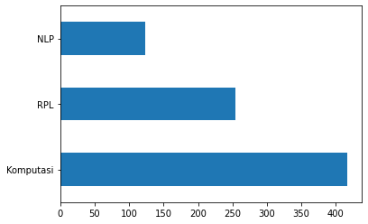
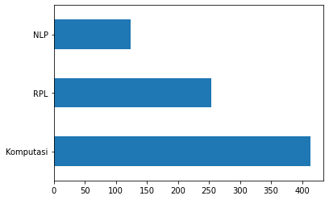

Load Data#
from google.colab import drive
drive.mount('/content/drive')
KeyboardInterruptTraceback (most recent call last)
<ipython-input-1-d5df0069828e> in <cell line: 2>()
1 from google.colab import drive
----> 2 drive.mount('/content/drive')
/usr/local/lib/python3.10/dist-packages/google/colab/drive.py in mount(mountpoint, force_remount, timeout_ms, readonly)
101 def mount(mountpoint, force_remount=False, timeout_ms=120000, readonly=False):
102 """Mount your Google Drive at the specified mountpoint path."""
--> 103 return _mount(
104 mountpoint,
105 force_remount=force_remount,
/usr/local/lib/python3.10/dist-packages/google/colab/drive.py in _mount(mountpoint, force_remount, timeout_ms, ephemeral, readonly)
130 )
131 if ephemeral:
--> 132 _message.blocking_request(
133 'request_auth', request={'authType': 'dfs_ephemeral'}, timeout_sec=None
134 )
/usr/local/lib/python3.10/dist-packages/google/colab/_message.py in blocking_request(request_type, request, timeout_sec, parent)
174 request_type, request, parent=parent, expect_reply=True
175 )
--> 176 return read_reply_from_input(request_id, timeout_sec)
/usr/local/lib/python3.10/dist-packages/google/colab/_message.py in read_reply_from_input(message_id, timeout_sec)
94 reply = _read_next_input_message()
95 if reply == _NOT_READY or not isinstance(reply, dict):
---> 96 time.sleep(0.025)
97 continue
98 if (
KeyboardInterrupt:
import numpy as np
import pandas as pd
df = pd.read_excel('PtaLabelPalingFix.xlsx')
# df = df.drop(['Unnamed: 0.1'], axis=1)
df.head()
| NIM | Nama | Judul | Abstrak | Kelas | |
|---|---|---|---|---|---|
| 0 | 40411100468 | A.Ubaidillah S.Kom | PERANCANGAN DAN IMPLEMENTASI SISTEM DATABASE T... | Sistem informasi akademik (SIAKAD) merupaka... | RPL |
| 1 | 40411100476 | M. Basith Ardianto, | APLIKASI KONTROL DAN MONITORING JARINGAN KOMPU... | Berjalannya koneksi jaringan komputer dengan l... | RPL |
| 2 | 70411100070 | Heri Supriyanto | SISTEM PENDUKUNG KEPUTUSAN OPTIMASI PENJADWALA... | Penjadwalan kuliah di Perguruan Tinggi me... | Komputasi |
| 3 | 80411100115 | Septian Rahman Hakim | SISTEM AUGMENTED REALITY ANIMASI BENDA BERGERA... | Seiring perkembangan teknologi yang ada diduni... | Komputasi |
| 4 | 70411100007 | Adi Chandra Laksono | Gerak Pekerja Pada Game Real Time Strategy Men... | Gerak pekerja ada pada game yang memiliki genr... | RPL |
Data Exploration#
# count nan value
df.isnull().sum()
NIM 0
Nama 0
Judul 0
Abstrak 3
Kelas 0
dtype: int64
df.dropna(inplace=True)
df.isnull().sum()
NIM 0
Nama 0
Judul 0
Abstrak 0
Kelas 0
dtype: int64
df.count()
NIM 795
Nama 795
Judul 795
Abstrak 795
Kelas 795
dtype: int64
df.tail()
| NIM | Nama | Judul | Abstrak | Kelas | |
|---|---|---|---|---|---|
| 793 | 160411100032 | Rachmad Agung Pambudi | PENERAPAN ALGORITMA LONG-SHORT TERM MEMORY UNT... | Investasi saham selama ini memiliki resiko ker... | NLP |
| 794 | 160411100182 | Nadila Hidayanti | SISTEM PENCARIAN TEKS AL-QURAN TERJEMAHAN BERB... | Information Retrieval (IR) merupakan pengambil... | Komputasi |
| 795 | 160411100077 | Afni Sakinah | KLASIFIKASI KOMPLEKSITAS VISUAL CITRA SAMPAH M... | Klasifikasi citra merupakan proses pengelompok... | Komputasi |
| 796 | 160411100084 | Friska Fatmawatiningrum | IDENTIFIKASI BINER ATRIBUT PEJALAN KAKI MENGGU... | Identifikasi atribut pejalan kaki merupakan sa... | NLP |
| 797 | 160411100044 | Dian Wibowo | DETEKSI OBJEK MANUSIA BERBASIS ONE STAGE DETEC... | Topik deteksi objek telah menarik perhatian ya... | Komputasi |
# Jumlah data pada masing-masing label KBK
df['Kelas'].value_counts()
Komputasi 417
RPL 254
NLP 124
Name: Kelas, dtype: int64
import matplotlib.pyplot as plt
df['Kelas'].value_counts().plot(kind='barh')
plt.show()

Text Preprocessing#
Text Cleaning#
import re, string
# Text Cleaning
def cleaning(text):
# HTML Tag Removal
text = re.compile('<.*?>|&([a-z0-9]+|#[0-9]{1,6}|#x[0-9a-f]{1,6});').sub('', str(text))
# Case folding
text = text.lower()
# Trim text
text = text.strip()
# Remove punctuations, karakter spesial, and spasi ganda
text = re.compile('<.*?>').sub('', text)
text = re.compile('[%s]' % re.escape(string.punctuation)).sub(' ', text)
text = re.sub('\s+', ' ', text)
# Number removal
text = re.sub(r'\[[0-9]*\]', ' ', text)
text = re.sub(r'[^\w\s]', '', str(text).lower().strip())
text = re.sub(r'\d', ' ', text)
text = re.sub(r'\s+', ' ', text)
# Mengubah text 'nan' dengan whitespace agar nantinya dapat dihapus
text = re.sub('nan', '', text)
return text
df['Judul'] = df['Judul'].apply(lambda x: cleaning(x))
df['Abstrak'] = df['Abstrak'].apply(lambda x: cleaning(x))
df.head()
| NIM | Nama | Judul | Abstrak | Kelas | |
|---|---|---|---|---|---|
| 0 | 40411100468 | A.Ubaidillah S.Kom | perancangan dan implementasi sistem database t... | sistem informasi akademik siakad merupakan sis... | RPL |
| 1 | 40411100476 | M. Basith Ardianto, | aplikasi kontrol dan monitoring jaringan kompu... | berjalannya koneksi jaringan komputer dengan l... | RPL |
| 2 | 70411100070 | Heri Supriyanto | sistem pendukung keputusan optimasi penjadwala... | penjadwalan kuliah di perguruan tinggi merupak... | Komputasi |
| 3 | 80411100115 | Septian Rahman Hakim | sistem augmented reality animasi benda bergera... | seiring perkembangan teknologi yang ada diduni... | Komputasi |
| 4 | 70411100007 | Adi Chandra Laksono | gerak pekerja pada game real time strategy men... | gerak pekerja ada pada game yang memiliki genr... | RPL |
# Checkpoint: Export Hasil Text Cleaning
df.to_csv('pta-cleaning.csv')
Remove Missing Values#
# Ubah empty string menjadi NaN value
df = df.replace('', np.nan)
# Cek missing values
df.isnull().sum()
NIM 0
Nama 0
Judul 0
Abstrak 2
Kelas 0
dtype: int64
# Remove missing values
df.dropna(inplace=True)
len(df)
793
Remove Duplicate Values#
# Cek apakah terdapat duplikasi data pada kolom judul
df[df['Judul'].duplicated()]
| NIM | Nama | Judul | Abstrak | Kelas | |
|---|---|---|---|---|---|
| 673 | 120411100015 | Abdul Ainur Rofik | sistem pendukung keputusan pemilihan pemain bo... | peningkatan pembinaan permai bola voli terutam... | Komputasi |
# Remove duplicates judul
df.drop_duplicates(subset=['Judul'], inplace=True)
# Cek apakah masih terdapat duplikasi data pada kolom judul
df[df['Judul'].duplicated()]
| NIM | Nama | Judul | Abstrak | Kelas |
|---|
# Cek apakah terdapat duplikasi data pada kolom abstrak
df[df['Abstrak'].duplicated()]
| NIM | Nama | Judul | Abstrak | Kelas |
|---|
# Remove duplicates abstrak
df.drop_duplicates(subset=['Abstrak'], inplace=True)
# Cek apakah masih terdapat duplikasi data pada kolom abstrak
df[df['Abstrak'].duplicated()]
| NIM | Nama | Judul | Abstrak | Kelas |
|---|
# Checkpoint: Export Hasil Preprocessing
df.to_csv('preprocessed-pta.csv')
# Distribusi Kelas setelah Text Preprocessing
df['Kelas'].value_counts().plot(kind='barh')
plt.show()

Tokenization#
from nltk.tokenize import word_tokenize
# Tokenizing Judul
df['judul_tokens'] = df['Judul'].apply(lambda x: word_tokenize(x))
df[["Judul", "judul_tokens"]].head()
| Judul | judul_tokens | |
|---|---|---|
| 0 | perancangan dan implementasi sistem database t... | [perancangan, dan, implementasi, sistem, datab... |
| 1 | aplikasi kontrol dan monitoring jaringan kompu... | [aplikasi, kontrol, dan, monitoring, jaringan,... |
| 2 | sistem pendukung keputusan optimasi penjadwala... | [sistem, pendukung, keputusan, optimasi, penja... |
| 3 | sistem augmented reality animasi benda bergera... | [sistem, augmented, reality, animasi, benda, b... |
| 4 | gerak pekerja pada game real time strategy men... | [gerak, pekerja, pada, game, real, time, strat... |
# Tokenizing Abstrak
df['abstrak_tokens'] = df['Abstrak'].apply(lambda x: word_tokenize(x))
df[["Abstrak", "abstrak_tokens"]].head()
| Abstrak | abstrak_tokens | |
|---|---|---|
| 0 | sistem informasi akademik siakad merupakan sis... | [sistem, informasi, akademik, siakad, merupaka... |
| 1 | berjalannya koneksi jaringan komputer dengan l... | [berjalannya, koneksi, jaringan, komputer, den... |
| 2 | penjadwalan kuliah di perguruan tinggi merupak... | [penjadwalan, kuliah, di, perguruan, tinggi, m... |
| 3 | seiring perkembangan teknologi yang ada diduni... | [seiring, perkembangan, teknologi, yang, ada, ... |
| 4 | gerak pekerja ada pada game yang memiliki genr... | [gerak, pekerja, ada, pada, game, yang, memili... |
Stop Words Removal#
from nltk.corpus import stopwords
from itertools import chain
stop_words = set(chain(stopwords.words('indonesian'), stopwords.words('english')))
df['judul_tokens'] = df['judul_tokens'].apply(lambda x: [w for w in x if not w in stop_words])
df['abstrak_tokens'] = df['abstrak_tokens'].apply(lambda x: [w for w in x if not w in stop_words])
df[["Judul", "judul_tokens"]].head()
| Judul | judul_tokens | |
|---|---|---|
| 0 | perancangan dan implementasi sistem database t... | [perancangan, implementasi, sistem, database, ... |
| 1 | aplikasi kontrol dan monitoring jaringan kompu... | [aplikasi, kontrol, monitoring, jaringan, komp... |
| 2 | sistem pendukung keputusan optimasi penjadwala... | [sistem, pendukung, keputusan, optimasi, penja... |
| 3 | sistem augmented reality animasi benda bergera... | [sistem, augmented, reality, animasi, benda, b... |
| 4 | gerak pekerja pada game real time strategy men... | [gerak, pekerja, game, real, time, strategy, f... |
df[["Abstrak", "abstrak_tokens"]].head()
| Abstrak | abstrak_tokens | |
|---|---|---|
| 0 | sistem informasi akademik siakad merupakan sis... | [sistem, informasi, akademik, siakad, sistem, ... |
| 1 | berjalannya koneksi jaringan komputer dengan l... | [berjalannya, koneksi, jaringan, komputer, lan... |
| 2 | penjadwalan kuliah di perguruan tinggi merupak... | [penjadwalan, kuliah, perguruan, kompleks, per... |
| 3 | seiring perkembangan teknologi yang ada diduni... | [seiring, perkembangan, teknologi, didunia, mu... |
| 4 | gerak pekerja ada pada game yang memiliki genr... | [gerak, pekerja, game, memiliki, genre, rts, r... |
Stemming#
from Sastrawi.Stemmer.StemmerFactory import StemmerFactory
from tqdm.auto import tqdm
tqdm.pandas()
factory = StemmerFactory()
stemmer = factory.create_stemmer()
# Stemming judul
df['judul_tokens'] = df['judul_tokens'].progress_apply(lambda x: stemmer.stem(' '.join(x)).split(' '))
100%|| 792/792 [03:35<00:00, 3.67it/s]
# Hasil stemming judul
df[["judul", "judul_tokens"]].head()
| judul | judul_tokens | |
|---|---|---|
| 0 | pengembangan sistem pendukung keputusan untuk ... | [kembang, sistem, dukung, putus, tentu, dosen,... |
| 1 | hubungan efikasi diri dengan kesiapan kerja lu... | [hubung, efikasi, kesiap, kerja, lulus, smk, n... |
| 2 | alat bantu penyandang tuetra berbasis deteksi ... | [alat, bantu, sandang, tuetra, bas, deteksi, o... |
| 3 | analisis thermovisi penghantar akibat transmis... | [analisis, thermovisi, hantar, akibat, transmi... |
| 4 | pengembangan modulberbasis production based ed... | [kembang, modulberbasis, production, based, ed... |
# Stemming abstrak
df['abstrak_tokens'] = df['abstrak_tokens'].progress_apply(lambda x: stemmer.stem(' '.join(x)).split(' '))
100%|| 792/792 [09:04<00:00, 1.46it/s]
# Hasil stemming abstrak
df[["Abstrak", "abstrak_tokens"]].head()
| Abstrak | abstrak_tokens | |
|---|---|---|
| 0 | sistem informasi akademik siakad merupakan sis... | [sistem, informasi, akademik, siakad, sistem, ... |
| 1 | berjalannya koneksi jaringan komputer dengan l... | [jalan, koneksi, jaring, komputer, lancar, gan... |
| 2 | penjadwalan kuliah di perguruan tinggi merupak... | [jadwal, kuliah, guru, kompleks, masalah, vari... |
| 3 | seiring perkembangan teknologi yang ada diduni... | [iring, kembang, teknologi, dunia, muncul, tek... |
| 4 | gerak pekerja ada pada game yang memiliki genr... | [gerak, kerja, game, milik, genre, rts, real, ... |
Export Cleaned Data#
df
| NIM | Nama | Judul | Abstrak | Kelas | judul_tokens | abstrak_tokens | |
|---|---|---|---|---|---|---|---|
| 0 | 40411100468 | A.Ubaidillah S.Kom | perancangan dan implementasi sistem database t... | sistem informasi akademik siakad merupakan sis... | RPL | [ancang, implementasi, sistem, database, distr... | [sistem, informasi, akademik, siakad, sistem, ... |
| 1 | 40411100476 | M. Basith Ardianto, | aplikasi kontrol dan monitoring jaringan kompu... | berjalannya koneksi jaringan komputer dengan l... | RPL | [aplikasi, kontrol, monitoring, jaring, komput... | [jalan, koneksi, jaring, komputer, lancar, gan... |
| 2 | 70411100070 | Heri Supriyanto | sistem pendukung keputusan optimasi penjadwala... | penjadwalan kuliah di perguruan tinggi merupak... | Komputasi | [sistem, dukung, putus, optimasi, jadwal, mata... | [jadwal, kuliah, guru, kompleks, masalah, vari... |
| 3 | 80411100115 | Septian Rahman Hakim | sistem augmented reality animasi benda bergera... | seiring perkembangan teknologi yang ada diduni... | Komputasi | [sistem, augmented, reality, animasi, benda, g... | [iring, kembang, teknologi, dunia, muncul, tek... |
| 4 | 70411100007 | Adi Chandra Laksono | gerak pekerja pada game real time strategy men... | gerak pekerja ada pada game yang memiliki genr... | RPL | [gerak, kerja, game, real, time, strategy, fin... | [gerak, kerja, game, milik, genre, rts, real, ... |
| ... | ... | ... | ... | ... | ... | ... | ... |
| 793 | 160411100032 | Rachmad Agung Pambudi | penerapan algoritma long short term memory unt... | investasi saham selama ini memiliki resiko ker... | NLP | [terap, algoritma, long, short, term, memory, ... | [investasi, saham, milik, resiko, rugi, gera, ... |
| 794 | 160411100182 | Nadila Hidayanti | sistem pencarian teks al quran terjemahan berb... | information retrieval ir merupakan pengambilan... | Komputasi | [sistem, cari, teks, al, quran, terjemah, baha... | [information, retrieval, ir, ambil, informasi,... |
| 795 | 160411100077 | Afni Sakinah | klasifikasi kompleksitas visual citra sampah m... | klasifikasi citra merupakan proses pengelompok... | Komputasi | [klasifikasi, kompleksitas, visual, citra, sam... | [klasifikasi, citra, proses, kelompok, piksel,... |
| 796 | 160411100084 | Friska Fatmawatiningrum | identifikasi biner atribut pejalan kaki menggu... | identifikasi atribut pejalan kaki merupakan sa... | NLP | [identifikasi, biner, atribut, pejal, kaki, ad... | [identifikasi, atribut, pejal, kaki, salah, te... |
| 797 | 160411100044 | Dian Wibowo | deteksi objek manusia berbasis one stage detec... | topik deteksi objek telah menarik perhatian ya... | Komputasi | [deteksi, objek, manusia, bas, one, stage, det... | [topik, deteksi, objek, tarik, perhati, kemban... |
792 rows 7 columns
df['judul_tokens'] = df['judul_tokens'].apply(lambda x: ' '.join(x))
df['abstrak_tokens'] = df['abstrak_tokens'].apply(lambda x: ' '.join(x))
df.to_csv('cleaned-data-kelas.csv')